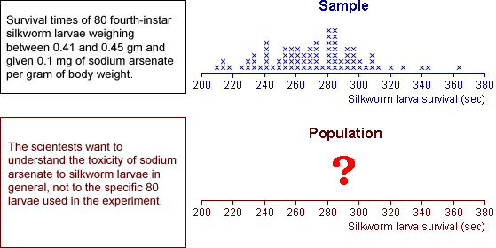

Inference
Most data sets are collected to provide information about some population or process underlying the data whose characteristics cannot be directly measured. The main aim is to generalise from the data to the underlying population.
The use of data (e.g. a random sample) to obtain information about an underlying population is called inference.
Examples
The following data sets were collected to provide information about an underlying population whose characteristics are unknown.

Inference and models
In the examples above, the data are modelled as a random sample from some underlying population. Indeed, the most common applications of inference deal with random samples.
More generally, inference is applicable to any situation where data are obtained through a random mechanism. We may understand some aspects of the process that generated the data (our model for the data-collection process), but other aspects of this process must usually be estimated from data that have been collected — inference.